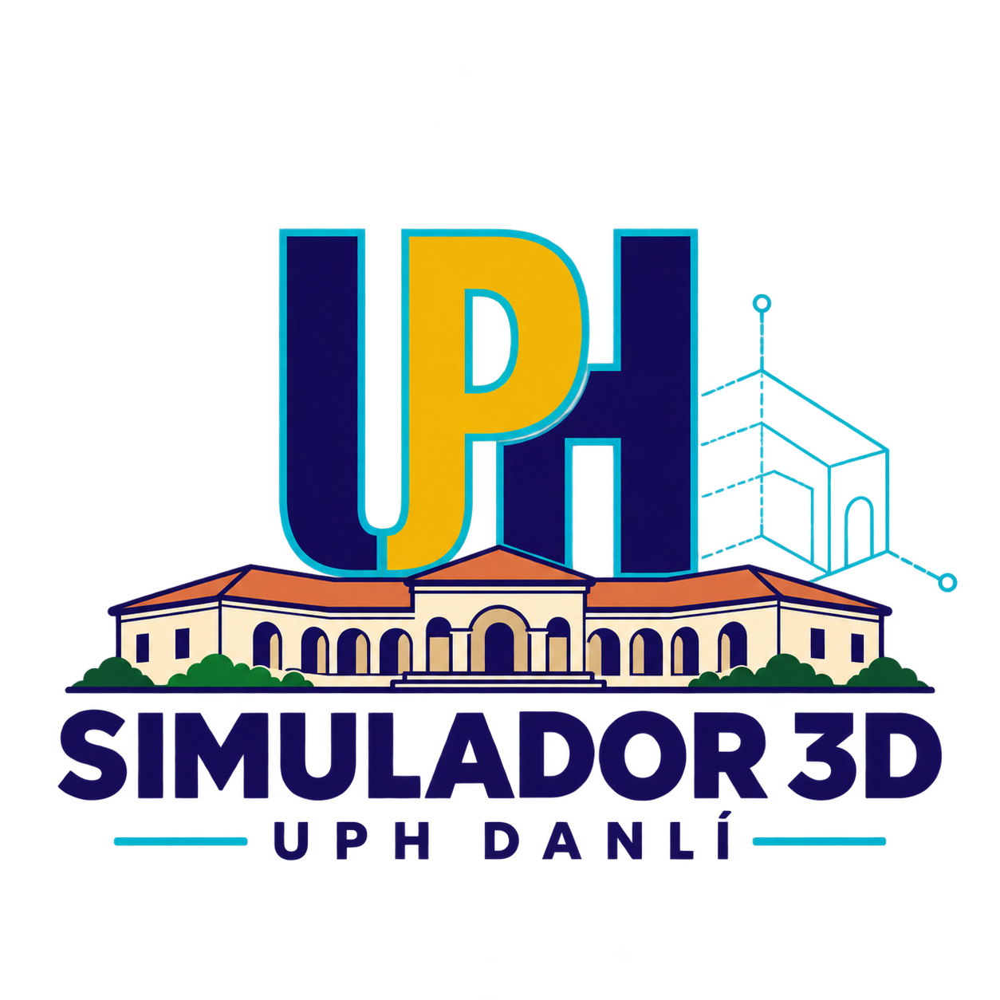

Preparando el edificio…
X · AnchoY · AlturaZ · Profundidad
🖱 Arrastra para girar · Rueda para acercar · Clic derecho para desplazar

UPH Danlí
Proyecto
Preparando el edificio…
X · AnchoY · AlturaZ · Profundidad
🖱 Arrastra para girar · Rueda para acercar · Clic derecho para desplazar